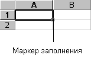

- Выделите ячейки, содержащие данные, которые
необходимо скопировать.
- Перетащите маркер заполнения через заполняемые
ячейки.

- Все существовавшие ранее значения или формулы в
заполняемых ячейках будут замещены.
- Чтобы быстро заполнить активную ячейку
содержимым ячейки, расположенной выше, нажмите
клавиши CTRL+D. Чтобы заполнить содержимым ячейки
слева, нажмите клавиши CTRL+R.
Перетаскивание маркера заполнения влево или
вверх и остановка в пределах выделенного
диапазона (до пересечения левой или верхней
границы) приведет к стиранию выделенных данных.
Если вместо копирования происходит приращение
таких данных, как числа или даты, то заново
выделите исходные значения и перетащите маркер
заполнения, удерживая клавишу CTRL.
Назад | Содержание | Вперед